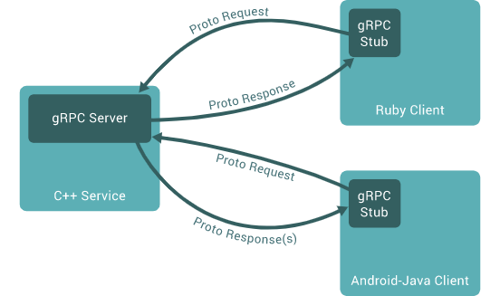
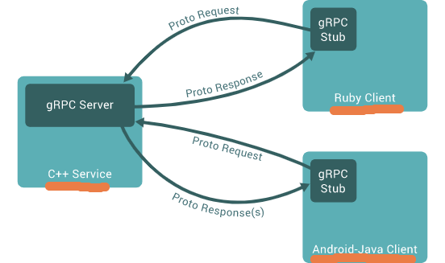
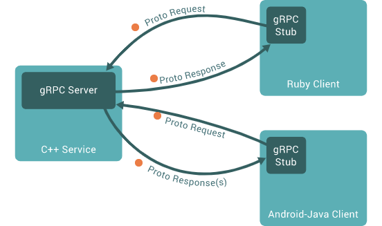
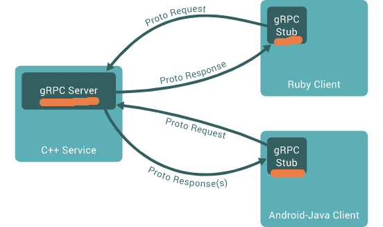

Agenda
- What is gRPC?
- gRPC workflow
- Coding Exercise: gRPC chat application
g... Remote Procedure Call
An open-source framework for connecting services
g... Remote Procedure Call
An open-source framework for connecting services
g... Remote Procedure Call
An open-source framework for connecting services
g... Remote Procedure Call
An open-source framework for connecting services
| gRPC | REST | |
|---|---|---|
| Payload | Protocal Buffers (binary) | JSON (text) |
| API Contract | Required and strictly typed | Optional and loosely typed |
| Protocol | HTTP/2 | HTTP/1.1 |
| Browser Usage | Limited support (gRPC-web) | Supported |
| Security | TLS/SSL | TLS/SSL |
gRPC Request/Response and Streaming Patterns

Chat application over gRPC

syntax = "proto3";
package library;
message Empty {}
message User {
string username = 1;
string email = 2;
}
message Book {
string title = 1;
string author = 2;
int64 isbn = 3;
enum Availability {
UNKNOWN = 0;
AVAILABLE = 1;
UNAVAILABLE = 2;
}
Availability availability = 4;
}
message BookRequest {
User user = 1;
Book book = 2;
}
service Library {
rpc AddUser(User) returns (Empty) {}
rpc ListBooks(Empty) returns (stream Book) {}
rpc RequestBook(BookRequest) returns (Empty) {}
}
What types of messages and rpcs might be defined?
syntax = "proto3";
package chat;
message Message {
string msg = 1;
}
message MessageResponse {
string msg = 1;
}
message ListenRequest {};
// Receives and broadcasts chat messages.
service Chat {
// Receives a message from a client and adds to list of messages.
rpc SendMessage(Message) returns (MessageResponse) {}
// Streams incoming messages to clients.
rpc Listen(ListenRequest) returns (stream Message) {}
}
What should we add for the new username feature?
syntax = "proto3";
package chat;
message User {
string username = 1;
}
message Message {
string msg = 1;
User user = 2;
}
message MessageResponse {
string msg = 1;
}
message ListenRequest {};
// Receives and broadcasts chat messages.
service Chat {
// Receives a message from a client and adds to list of messages.
rpc SendMessage(Message) returns (MessageResponse) {}
// Streams incoming messages to clients.
rpc Listen(ListenRequest) returns (stream Message) {}
// Adds a new user to the server.
rpc AddUser(User) returns (MessageResponse) {}
}
Creating a gRPC Service
python3 -m grpc_tools.protoc -I=. --python_out=. --grpc_python_out=. chat.proto
syntax = "proto3";
package chat;
message User {
string username = 1;
}
message Message {
string msg = 1;
User user = 2;
}
message MessageResponse {
string msg = 1;
}
message ListenRequest {};
// Receives and broadcasts chat messages.
service Chat {
// Receives a message from a client and adds to list of messages.
rpc SendMessage(Message) returns (MessageResponse) {}
// Streams incoming messages to clients.
rpc Listen(ListenRequest) returns (stream Message) {}
// Adds a new user to the server.
rpc AddUser(User) returns (MessageResponse) {}
}
from concurrent import futures
import chat_pb2
import chat_pb2_grpc
import grpc
MESSAGES = []
USERS = set()
class ChatService(chat_pb2_grpc.ChatServicer):
def SendMessage(self, request, context):
MESSAGES.append(request)
return chat_pb2.MessageResponse(msg="Sent message")
def AddUser(self, request, context):
username = request.username
if username in USERS:
return chat_pb2.MessageResponse(msg="Username taken, please choose another.")
return chat_pb2.MessageResponse(msg="Added user")
def Listen(self, request, context):
seen_messages = len(MESSAGES)
while True:
if len(MESSAGES) > seen_messages:
message = MESSAGES[seen_messages]
seen_messages += 1
yield message
def serve():
server = grpc.server(futures.ThreadPoolExecutor(max_workers=10))
chat_pb2_grpc.add_ChatServicer_to_server(ChatService(), server)
server.add_insecure_port("[::]:50051")
server.start()
print("server started")
server.wait_for_termination()
if __name__ == "__main__":
serve()
import threading
import chat_pb2
import chat_pb2_grpc
import grpc
class ChatClient(object):
def __init__(self, host="localhost", port="50051"):
self.host = host
self.port = port
self.channel = grpc.insecure_channel(f"{self.host}:{self.port}")
self.stub = chat_pb2_grpc.ChatStub(self.channel)
def add_user(self, username):
user = chat_pb2.User(username=username)
response = self.stub.AddUser(user)
print(response.msg)
if response.msg == "Added user":
self.user = user
return True
return False
def send_message(self, msg):
self.stub.SendMessage(chat_pb2.Message(msg=msg, user=self.user))
def start_listening_thread(self):
threading.Thread(target=self.listen, daemon=True).start()
def listen(self):
for msg in self.stub.Listen(chat_pb2.ListenRequest()):
print(f">>> {msg.user.username}: {msg.msg}")
### MENU COMMANDS
def main():
client = ChatClient()
while True:
username = input("choose a username >>> ")
added_user = client.add_user(username)
if added_user:
break
client.start_listening_thread()
while True:
message = input()
client.send_message(message)
if __name__ == "__main__":
main()